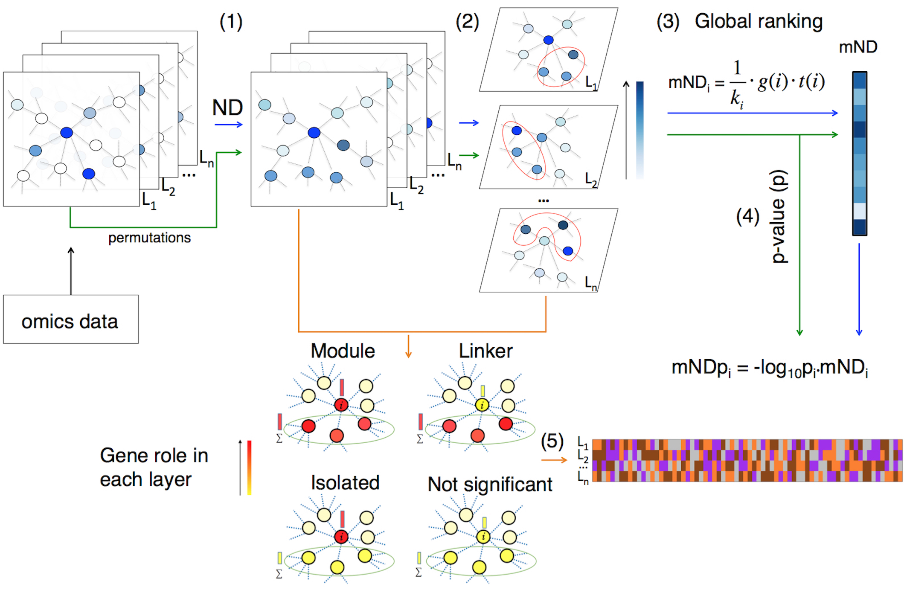

mND uses multi-layer Network Diffusion to find gene networks that contain high scoring genes. It requires two or more “layers” of genome-wide scores and an interactome.

image from: https://academic.oup.com/bioinformatics/article/36/3/865/5553095
Documentation: https://emosca-cnr.github.io/mND
Source code: https://github.com/emosca-cnr/mND
Citation: Di Nanni N, Gnocchi M, Moscatelli M, Milanesi L and Mosca E, Gene relevance based on multiple evidences in complex networks, Bioinformatics, Volume 36, Issue 3, 1 February 2020, Pages 865–871, https://doi.org/10.1093/bioinformatics/btz652
Contact: Ettore Mosca, Bioinformatics Lab, CNR-ITB
Installation
The package requires a series of other R packages, which are available in CRAN and github. In most of the cases, the following instructions guarantee that all dependencies are installed:
{r, eval=FALSE} install.packages("devtools") devtools::install_github("emosca-cnr/NPATools") devtools::install_github("emosca-cnr/dmfind") devtools::install_github("emosca-cnr/mND", build_vignettes = TRUE)
If this is not the case, please follow the instruction of the R environment and manually install the missing packages.